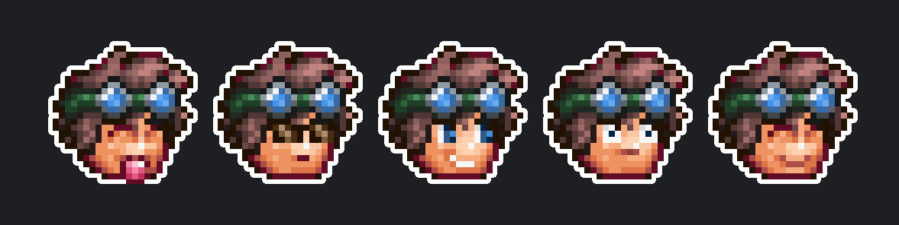

I am Sam Poirier, a Computer Science student, with an interest in game design, cybersecurity and robotics. My development experience is primarily in C#, Python and JavaScript, using frameworks such as Winforms, PyQt and Electron.

Sam Poirier ~ darthmorf
about me
My Projects
plus some other cool stuff
- Super Terraria World
-
I am a developer for Super Terraria World, an MMORPG mod for the game Terraria. STW acts as a fully fledged total conversion mod, and plays very differently to the base game, implementing new items, new bosses, new npcs, quests, static worlds to explore and much more! You can support STW on Patreon.
- Terraria Logo Maker
-
A C# Desktop app that can be used to generate custom Terraria themed logos - a web-based rewrite is currently WIP.
Terraria Forums Thread. C# Github Repo. Web Github Repo. - T-Backup
-
A utility program that backs up worlds and player files for the game Terraria. It supports multiple profiles to allow different install locations (useful in the case that you have mods installed to different directories). It is written in C# and currently only runs on windows.
Terraria Forums Thread. Github Repo. - Photon
-
Photon is a basic IM client written in Python. It's not intended for actual use and is more of a proof of concept; a way to get some experience with PyQt, and a simultaneously a peice of Coursework.
Github Repo. - Angory_Tom
-
Angory_Tom (Tom Clark/Angor) is a Youtuber and member of the Yogscast Network. I am a senior administrator of both the official subreddit and Discord Server.